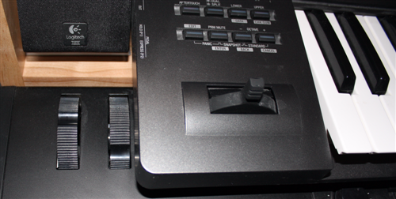
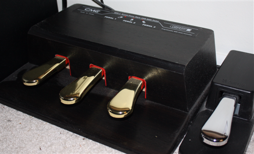
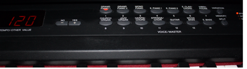
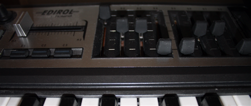

piano101 - keyboard specs
The qualities of a keyboard
We already talked about 88 weighted keys You want it to feel as close to an acoustic as possible. So you can adapt to an acoustic when you come across one. (Although acoustics have even a wider range of feel than digitals.) This and a hold pedal is about all you need for playing piano.
Here are some synthesizer-y things to consider for later
keyboard pressure ( = channel pressure = mono aftertouch )
leaning on the keys after they're down can modify the sound

pitchbend wheel
a wheel that always springs back to the center.
"bends" the note's frequency down/up a halfstep or so.
Gives you sort of a guitar-ish string bending sound.
modulation wheel
stays where you put it (or might spring back to off)
usually adds vibrato or tremelo.
Changes the sound SOMEhow.

1/4" jack for hold pedal
foot controlled note sustain switch
You may need to buy this seperate from the keyboard.
There are other sorts of pedals, too. For volume, sound tweaking, etc.
Some are on/off, some have a continuous range.

program change buttons
let's you pick a number (from 0 to 127, sometimes more, sometimes less)
for a sound. Just the number is sent over midi, not a string
that shows in the display.
The number picks a sound on the RECEIVING keyboard/softsynth.

master volume slider, master balance slider, effects amount sliders,
and other sound tweaking sliders, knobs, buttons, pedals, etc, etc.
Rather non standard and you don't really know if it'll go across midi
or not unless you actually try it out... or can decipher the manual...
sound output
A digital piano generates sound with the built in synthesizer.
Some keyboards ("controller keyboards") only send out midi so a software synthesizer on a computer can make the sound.
does it have enough GOOD sounds? Can you tweak them?
You want a solid piano sound for when you play live.
You want it to have drum sounds and background track sounds, if possible.
Go through the sounds and see if you'll want to USE them in a song.
Ideally, you can edit the sounds and change them around a bit.
how many notes can it do max? (polyphony)
Usually, not a big worry. Unless you're doing band arrangements with
a LOT of instruments playing at once (bass, drums, strings, etc)
The hold pedal will keep notes going, eating polyphony.
Stereo may need 2 voices (units of polyphony).
Layered sounds (like Piano+String sounds) may need 3+ voices.
can it listen to all 16 midi channels? more than one port?
A midi "port" has 16 channels. So Extra ports mean 32 or 48 channels.
Channel 10 is reserved for drums.
Ok. Now how do we hook this thing up ???
next: midi cable hookup home